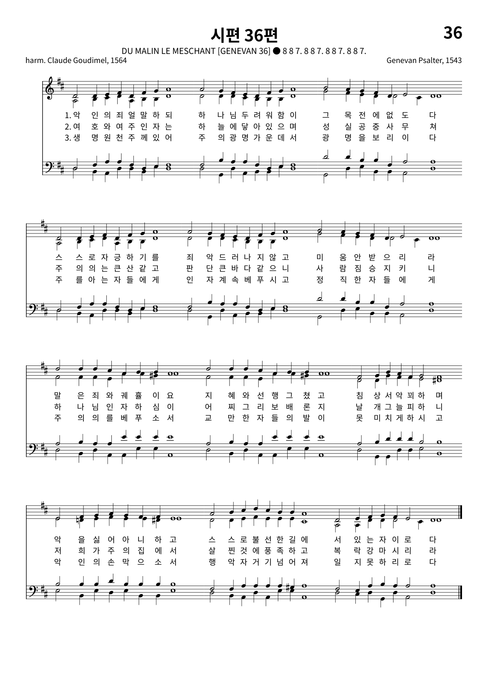

시편 36편
DU MALIN LE MESCHANT [GENEVAN 36] · 8 8 7. 8 8 7. 8 8 7. 8 8 7.
곡조: Genevan Psalter, 1543 · 화성: Claude Goudimel, 1564 · 가사: 개역한글판 시편 36편 편역(AI 초벌 편역판 · 신학 감수 전) · 3절
악보 PDF MusicXML(출력용) MusicXML(반주용, 전주·반복 포함) 개역한글 시편 36편 읽기
악보
← 시편 35편 B 목록반주 재생(준비 중)시편 37편 A →
가사
1절 (시편 1~4절)
악인의 죄얼 말하되
하나님 두려워함이
그 목전에 없도다
스스로 자긍하기를
죄악 드러나지 않고
미움 안 받으리라
말은 죄와 궤휼이요
지혜와 선행 그쳤고
침상서 악 꾀하며
악을 싫어 아니하고
스스로 불선한 길에
서 있는 자이로다
악인의 죄얼 말하되
하나님 두려워함이
그 목전에 없도다
스스로 자긍하기를
죄악 드러나지 않고
미움 안 받으리라
말은 죄와 궤휼이요
지혜와 선행 그쳤고
침상서 악 꾀하며
악을 싫어 아니하고
스스로 불선한 길에
서 있는 자이로다
2절 (시편 5~8절)
여호와여 주 인자는
하늘에 닿아 있으며
성실 공중 사무쳐
주의 의는 큰 산 같고
판단 큰 바다 같으니
사람 짐승 지키니
하나님 인자하심이
어찌 그리 보배론지
날개 그늘 피하니
저희가 주의 집에서
살찐 것에 풍족하고
복락 강 마시리라
여호와여 주 인자는
하늘에 닿아 있으며
성실 공중 사무쳐
주의 의는 큰 산 같고
판단 큰 바다 같으니
사람 짐승 지키니
하나님 인자하심이
어찌 그리 보배론지
날개 그늘 피하니
저희가 주의 집에서
살찐 것에 풍족하고
복락 강 마시리라
3절 (시편 9~12절)
생명 원천 주께 있어
주의 광명 가운데서
광명을 보리이다
주를 아는 자들에게
인자 계속 베푸시고
정직한 자들에게
주의 의를 베푸소서
교만한 자들의 발이
못 미치게 하시고
악인의 손 막으소서
행악자 거기 넘어져
일지 못하리로다
생명 원천 주께 있어
주의 광명 가운데서
광명을 보리이다
주를 아는 자들에게
인자 계속 베푸시고
정직한 자들에게
주의 의를 베푸소서
교만한 자들의 발이
못 미치게 하시고
악인의 손 막으소서
행악자 거기 넘어져
일지 못하리로다